HashMap实现了Map接口，继承AbstractMap。其中Map接口定义了键映射到值的规则，而AbstractMap类提供 Map 接口的骨干实现，以最大限度地减少实现此接口所需的工作，其实AbstractMap类已经实现了Map，这里标注Map ！
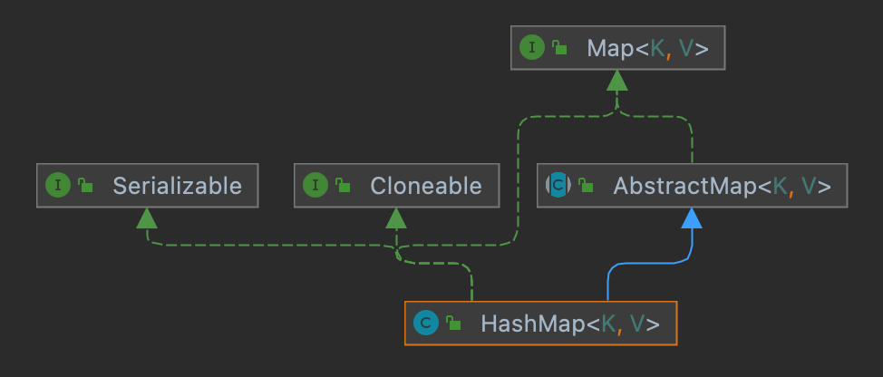
1public class HashMap<K,V> extends AbstractMap<K,V> implements Map<K,V>, Cloneable, SerializableHashMap提供了三个构造函数：
HashMap()：构造一个具有默认初始容量 (16) 和默认加载因子 (0.75) 的空HashMap。
HashMap(int initialCapacity)：构造一个带指定初始容量和默认加载因子 (0.75) 的空 HashMap。
HashMap(int initialCapacity, float loadFactor)：构造一个带指定初始容量和加载因子为空HashMap。
在这里提到了两个参数：初始容量，加载因子。这两个参数是影响HashMap性能的重要参数。
容量表示哈希表中桶的数量，初始容量是创建哈希表时的容量。
加载因子是哈希表在其容量自动增加之前可以达到多满的一种尺度，它衡量的是一个散列表的空间的使用程度，负载因子越大表示散列表的装填程度越高，反之愈小。对于使用链表法的散列表来说，查找一个元素的平均时间是O(1+a)，因此如果负载因子越大，对空间的利用更充分，然而后果是查找效率的降低；如果负载因子太小，那么散列表的数据将过于稀疏，对空间造成严重浪费。系统默认负载因子为0.75，一般情况下我们是无需修改的。 HashMap是一种支持快速存取的数据结构，要了解它的性能必须要了解它的数据结构。
我们知道在Java中最常用的两种结构是数组和模拟指针(引用)，几乎所有的数据结构都可以利用这两种来组合实现，HashMap也是如此。实际上HashMap是一个“链表散列”，如下是它数据结构：
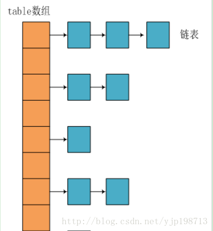
HashMap底层实现还是数组，只是数组的每一项都是一条链表。其中参数initialCapacity就代表了该数组的长度。下面为HashMap构造函数的源码：
x1public HashMap(int initialCapacity, float loadFactor) { 2 //初始容量不能<0 3 if (initialCapacity < 0) 4 throw new IllegalArgumentException("Illegal initial capacity: " 5 + initialCapacity); 6 7 //初始容量不能 > 最大容量值，HashMap的最大容量值为2^30 8 if (initialCapacity > MAXIMUM_CAPACITY) 9 initialCapacity = MAXIMUM_CAPACITY; 10 11 //负载因子不能 < 0 12 if (loadFactor <= 0 || Float.isNaN(loadFactor)) 13 throw new IllegalArgumentException("Illegal load factor: " 14 + loadFactor); 15
16 // 计算出大于 initialCapacity 的最小的 2 的 n 次方值。 17 int capacity = 1; 18 while (capacity < initialCapacity) 19 capacity <<= 1; 20
21 this.loadFactor = loadFactor; 22 23 //设置HashMap的容量极限，当HashMap的容量达到该极限时就会进行扩容操作 24 threshold = (int) (capacity * loadFactor); 25 //初始化table数组 26 table = new Entry[capacity]; 27 init(); 28 }从源码中可以看出，每次新建一个HashMap时，都会初始化一个table数组。table数组的元素为Entry节点。
171static class Entry<K,V> implements Map.Entry<K,V> { 2 final K key; 3 V value; 4 Entry<K,V> next; 5 final int hash; 6
7 /** 8 * Creates new entry. 9 */ 10 Entry(int h, K k, V v, Entry<K,V> n) { 11 value = v; 12 next = n; 13 key = k; 14 hash = h; 15 } 16 ....... 17}其中Entry为HashMap的内部类，它包含了键key、值value、下一个节点next，以及hash值，这是非常重要的，正是由于Entry才构成了table数组的项为链表。
291public V put(K key, V value) { 2 //当key为null，调用putForNullKey方法，保存null与table第一个位置中，这是HashMap允许为null的原因 3 if (key == null) 4 return putForNullKey(value); 5 6 //计算key的hash值 ---往下看1---7 int hash = hash(key.hashCode()); 8 //计算key hash 值在 table 数组中的位置 ---往下看2---9 int i = indexFor(hash, table.length); 10 11 //从i出开始迭代 e,找到 key 保存的位置 12 for (Entry<K, V> e = table[i]; e != null; e = e.next) { 13 Object k; 14 //判断该条链上是否有hash值相同的(key相同) 15 //若存在相同，则直接覆盖value，返回旧value 16 if (e.hash == hash && ((k = e.key) == key || key.equals(k))) { 17 V oldValue = e.value; //旧值 = 新值 18 e.value = value; 19 e.recordAccess(this); 20 return oldValue; //返回旧值 21 } 22 } 23 //修改次数增加1 24 modCount++; 25 26 //将key、value添加至i位置处 27 addEntry(hash, key, value, i); 28 return null; 29} 保存数据的过程为：首先判断key是否为null，若为null，则直接调用putForNullKey方法。若不为空则先计算key的hash值，然后根据hash值搜索在table数组中的索引位置，如果table数组在该位置处有元素，则通过比较是否存在相同的key，若存在则覆盖原来key的value，否则将该元素保存在链头（最先保存的元素放在链尾）。若table在该处没有元素，则直接保存。这个过程看似比较简单，其实深有内幕。有如下几点：
1、 先看迭代处。此处迭代原因就是为了防止存在相同的key值，若发现两个hash值（key）相同时，HashMap的处理方式是用新value替换旧value，这里并没有处理key，这就解释了HashMap中没有两个相同的key。
2、 在看hash计算和查找index2处，这里是HashMap的精华所在。首先是hash方法，该方法为一个纯粹的数学计算，就是计算h的hash值。
41static int hash(int h) { 2 h ^= (h >>> 20) ^ (h >>> 12); 3 return h ^ (h >>> 7) ^ (h >>> 4); 4 }我们知道对于HashMap的table而言，数据分布需要均匀（最好每项都只有一个元素，这样就可以直接找到），不能太紧也不能太松，太紧会导致查询速度慢，太松则浪费空间。计算hash值后，怎么才能保证table元素分布均与呢？我们会想到取模，但是由于取模的消耗较大，HashMap是这样处理的：调用indexFor方法。
31static int indexFor(int h, int length) { 2 return h & (length-1); 3 }HashMap的底层数组长度总是2的n次方，在构造函数中存在：capacity <<= 1;这样做总是能够保证HashMap的底层数组长度为2的n次方。当length为2的n次方时，h&(length - 1)就相当于对length取模，而且速度比直接取模快得多，这是HashMap在速度上的一个优化。至于为什么是2的n次方下面解释。
我们回到indexFor方法，该方法仅有一条语句：h&(length - 1)，这句话除了上面的取模运算外还有一个非常重要的责任：均匀分布table数据和充分利用空间。 这里我们假设length为16(2^n)和15，h为5、6、7。
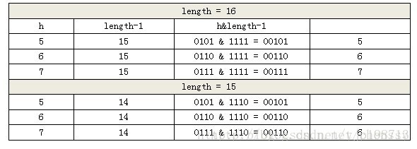
当length=15时，6和7的结果一样，这样表示他们在table存储的位置是相同的，也就是产生了碰撞，6、7就会在一个位置形成链表，这样就会导致查询速度降低。这里只分析三个数字不是很多，那么我们就看0-15。
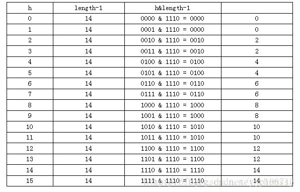
再复习put的流程：当我们想一个HashMap中添加一对key-value时，系统首先会计算key的hash值，然后根据hash值确认在table中存储的位置。若该位置没有元素，则直接插入。否则迭代该处元素链表并依此比较其key的hash值。如果两个hash值相等且key值相等(e.hash == hash && ((k = e.key) == key || key.equals(k))),则用新的Entry的value覆盖原来节点的value。
如果两个hash值相等但key值不等 ，则将该节点插入该链表的链头。具体的实现过程见addEntry方法，如下：
111void addEntry(int hash, K key, V value, int bucketIndex) { 2 //获取bucketIndex处的Entry 3 Entry<K, V> e = table[bucketIndex]; 4 5 //将新创建的 Entry 放入 bucketIndex 索引处，并让新的 Entry 指向原来的 Entry 6 table[bucketIndex] = new Entry<K, V>(hash, key, value, e); 7 8 //若HashMap中元素的个数超过极限了，则容量扩大两倍 9 if (size++ >= threshold) 10 resize(2 * table.length); 11}这个方法中有两点需要注意：
链的产生：这是一个非常优雅的设计。系统总是将新的Entry对象添加到bucketIndex处。如果bucketIndex处已经有了对象，那么新添加的Entry对象将指向原有的Entry对象，形成一条Entry链，但是若bucketIndex处没有Entry对象，也就是e==null,那么新添加的Entry对象指向null，也就不会产生Entry链了。
扩容问题：随着HashMap中元素的数量越来越多，发生碰撞的概率就越来越大，所产生的链表长度就会越来越长，这样势必会影响HashMap的速度，为了保证HashMap的效率，系统必须要在某个临界点进行扩容处理。该临界点在当HashMap中元素的数量等于table数组长度*加载因子。但是扩容是一个非常耗时的过程，因为它需要重新计算这些数据在新table数组中的位置并进行复制处理。所以如果我们已经预知HashMap中元素的个数，那么预设元素的个数能够有效的提高HashMap的性能。
相对于HashMap的保存而言，取就显得比较简单了。通过key的hash值找到在table数组中的索引处的Entry，然后返回该key对应的value即可。
151public V get(Object key) { 2 // 若为null，调用getForNullKey方法返回相对应的value 3 if (key == null) 4 return getForNullKey(); 5 // 根据该 key 的 hashCode 值计算它的 hash 码 6 int hash = hash(key.hashCode()); 7 // 取出 table 数组中指定索引处的值 8 for (Entry<K, V> e = table[indexFor(hash, table.length)]; e != null; e = e.next) { 9 Object k; 10 //若搜索的key与查找的key相同，则返回相对应的value 11 if (e.hash == hash && ((k = e.key) == key || key.equals(k))) 12 return e.value; 13 } 14 return null; 15}在这里能够根据key快速的取到value除了和HashMap的数据结构密不可分外，还和Entry有莫大的关系，在前面就提到过，HashMap在存储过程中并没有将key，value分开来存储，而是当做一个整体key-value来处理的，这个整体就是Entry对象。同时value也只相当于key的附属而已。在存储的过程中，系统根据key的hashcode来决定Entry在table数组中的存储位置，在取的过程中同样根据key的hashcode取出相对应的Entry对象。
从结构实现来讲，java8版本的HashMap是数组+链表+红黑树实现的，如下如所示。
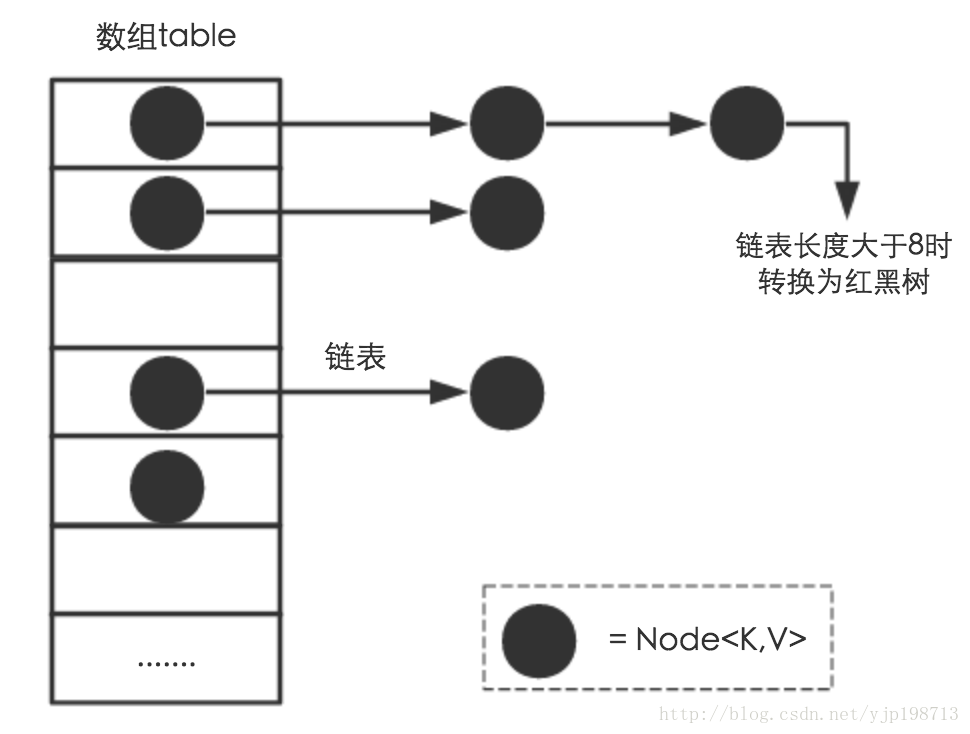
HashMap数据底层具体存储结构：从源码可知，HashMap类中有一个非常重要的内部类，就是Node[] table，即哈希桶数组，明显它是一个Node的数组：
141static class Node<K,V> implements Map.Entry<K,V> {2 final int hash; //用来定位数组索引位置3 final K key;4 V value;5 Node<K,V> next; //链表的下一个node6
7 Node(int hash, K key, V value, Node<K,V> next) { ... }8 public final K getKey(){ ... }9 public final V getValue() { ... }10 public final String toString() { ... }11 public final int hashCode() { ... }12 public final V setValue(V newValue) { ... }13 public final boolean equals(Object o) { ... }14}Node是HashMap的一个内部类，实现了Map.Entry接口，本质是就是一个映射(键值对)。上图中的每个黑色圆点就是一个Node对象。
优点：HashMap就是使用哈希表来存储的。哈希表为解决冲突，可以采用开放地址法和链地址法等来解决问题，Java中HashMap采用了链地址法。简单来说，就是数组加链表的结合。在每个数组元素上都一个链表结构，当数据被Hash后，得到数组下标，把数据放在对应下标元素的链表上。例如程序执行下面代码：
map.put(“美团”,”小美”);
系统获取到”美团”这个key的hashCode值，然后再通过Hash算法的后两步运算（高位运算和取模运算，下文有介绍）来定位该键值对的存储位置，有时两个key会定位到相同的位置，表示发生了Hash碰撞。当然Hash算法计算结果越分散均匀，Hash碰撞的概率就越小，map的存取效率就会越高。
如果哈希桶数组很大，即使较差的Hash算法也会比较分散，如果哈希桶数组数组很小，即使好的Hash算法也会出现较多碰撞，所以就需要在空间成本和时间成本之间权衡，需要根据实际情况来确定哈希桶数组的大小，并在此基础上设计好的hash算法减少Hash碰撞。
那么需要通过什么方式来控制map使得Hash碰撞的概率又小，哈希桶数组（Node[] table）占用空间又少呢？答案就是好的Hash算法和扩容机制。
在理解Hash和扩容流程之前，需要先了解HashMap的几个字段。从HashMap的默认构造函数源码可知，构造函数就是对下面几个字段进行初始化：
41 int threshold; // 所能容纳的key-value对极限 2 final float loadFactor; // 负载因子3 int modCount; 4 int size;首先，Node[] table的初始化长度length默认值是16，Load factor负载因子默认值是0.75，threshold是HashMap所能容纳的最大数据量的Node(键值对)个数。threshold = length * Load factor。也就是说，在数组定义好长度之后，负载因子越大，所能容纳的键值对个数越多。
超过threshold数量就重新扩容resize，扩容后的HashMap容量是之前容量的两倍。默认的负载因子0.75是对空间和时间效率的一个平衡选择，如果内存空间很多而又对时间效率要求很高，可以降低负载因子loadFactor的值；相反，如果内存空间紧张而对时间效率要求不高，可以增加负载因子loadFactor的值，这个值可以大于1。
size这个字段其实很好理解，就是HashMap中实际存在的键值对数量。注意和table的长度length、容纳最大键值对数量threshold的区别。
modCount字段主要用来记录HashMap内部结构发生变化的次数，主要用于迭代的快速失败。强调一点，内部结构发生变化指的是结构发生变化，例如put新键值对，但是某个key对应的value值被覆盖不属于结构变化。
在HashMap中，哈希桶数组table的长度length大小必须为2的n次方(一定是合数)，这是一种非常规的设计，常规的设计是把桶的大小设计为素数。Hashtable初始化桶大小为（16*0.75）11，就是桶大小设计为素数的应用（Hashtable扩容后不能保证还是素数）。HashMap采用这种非常规设计，主要是为了在取模和扩容时做优化，同时为了减少冲突，HashMap定位哈希桶索引位置时，也加入了高位参与运算的过程。
这里存在一个问题，即使负载因子和Hash算法设计的再合理，也免不了会出现拉链过长的情况，一旦出现拉链过长，则会严重影响HashMap的性能。在JDK1.8版本中，对数据结构做了进一步的优化，引入了红黑树。而当链表长度太长（默认超过8）时，链表就转换为红黑树，利用红黑树快速增删改查的特点提高HashMap的性能，其中会用到红黑树的插入、删除、查找等算法。
HashMap的内部功能实现很多，本文主要从根据key获取哈希桶数组索引位置、put方法的详细执行、扩容过程三个具有代表性的点深入展开讲解。
不管增加、删除、查找键值对，定位到哈希桶数组的位置都是很关键的第一步。前面说过HashMap的数据结构是数组和链表的结合，所以我们当然希望这个HashMap里面的元素位置尽量分布均匀些，尽量使得每个位置上的元素数量只有一个，那么当我们用hash算法求得这个位置的时候，马上就可以知道对应位置的元素就是我们要的，不用遍历链表，大大优化了查询的效率。HashMap定位数组索引位置，直接决定了hash方法的离散性能。先看看源码的实现(方法一+方法二):
方法一：
71static final int hash(Object key) { //jdk1.8 & jdk1.72 int h;3 // h = key.hashCode() 为第一步 取hashCode值4 // h ^ (h >>> 16) 为第二步 高位参与运算5 6 return (key == null) ? 0 : (h = key.hashCode()) ^ (h >>> 16); //1.8里的7}方法二：
41 //jdk1.7的源码，jdk1.8没有这个方法，但是实现原理一样的2static int indexFor(int h, int length) { 3 return h & (length-1); //第三步 取模运算4}这里的Hash算法本质上就是三步：取key的hashCode值、高位运算、取模运算。
hashCode：对于任意给定的对象，只要它的hashCode()返回值相同，那么程序调用方法一所计算得到的Hash码值总是相同的。我们首先想到的就是把hash值对数组长度取模运算，这样一来，元素的分布相对来说是比较均匀的。
模运算的消耗还是比较大的，在HashMap中是这样做的：调用方法二来计算该对象应该保存在table数组的哪个索引处。这个方法非常巧妙，它通过h & (table.length -1)来得到该对象的保存位，而HashMap底层数组的长度总是2的n次方，这是HashMap在速度上的优化。当length总是2的n次方时，h& (length-1)运算等价于对length取模，也就是h%length，但是&比%具有更高的效率。
在JDK1.8的实现中，优化了高位运算的算法，通过hashCode()的高16位异或低16位实现的：(h = k.hashCode()) ^ (h >>> 16)，主要是从速度、功效、质量来考虑的，这么做可以在数组table的length比较小的时候，也能保证考虑到高低Bit都参与到Hash的计算中，同时不会有太大的开销。 下面举例说明下，n为table的长度。
异或运算：进行二进制位运算，值不同时结果是1，相同时结果为0。
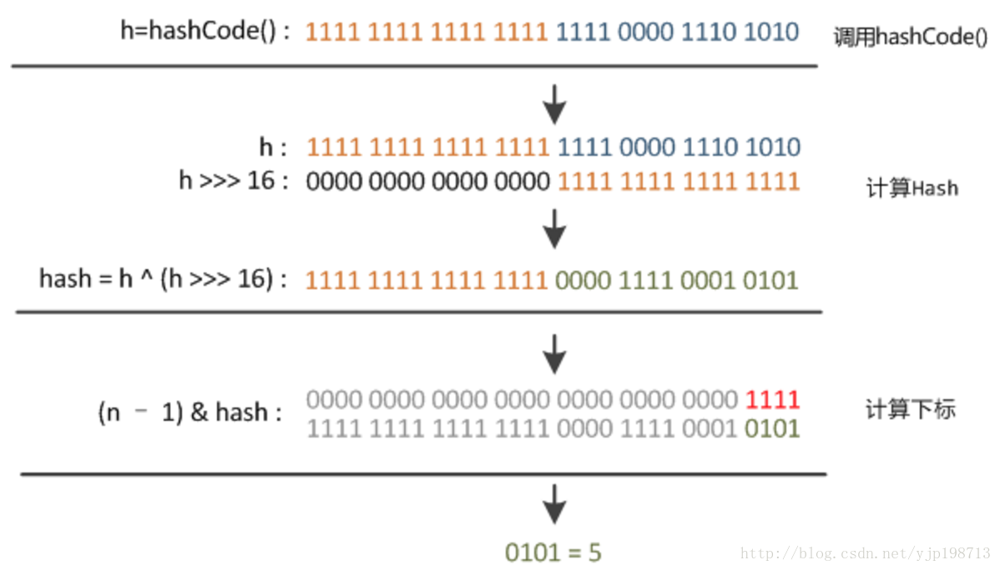
执行过程可以通过下图来理解。
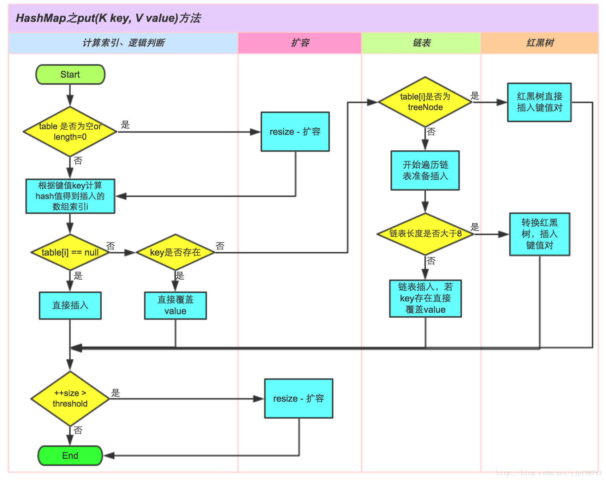
判断键值对数组table[i]是否为空或为null，否则执行resize()进行扩容；
根据键值key计算hash值得到插入的数组索引i，如果table[i]==null，直接新建节点添加，转向⑥，如果table[i]不为空，转向③；
判断table[i]的首个元素是否和key一样，如果相同直接覆盖value，否则转向④，这里的相同指的是hashCode以及equals；
判断table[i] 是否为treeNode，即table[i] 是否是红黑树，如果是红黑树，则直接在树中插入键值对，否则转向⑤；
遍历table[i]，判断链表长度是否大于8，大于8的话把链表转换为红黑树，在红黑树中执行插入操作，否则进行链表的插入操作；遍历过程中若发现key已经存在直接覆盖value即可；
插入成功后，判断实际存在的键值对数量size是否超多了最大容量threshold，如果超过，进行扩容。
651public V put(K key, V value) {2 //hash(key) 对key取hash值3 return putVal(hash(key), key, value, false, true);4 }5
6
7final V putVal(int hash, K key, V value, boolean onlyIfAbsent,8 boolean evict) {9 Node<K,V>[] tab; Node<K,V> p; int n, i;10 11 // 步骤①：tab为空则创建数组12 if ((tab = table) == null || (n = tab.length) == 0)13 n = (tab = resize()).length;14 15 // 步骤②：计算index，并对null做处理 ,(n - 1) & hash 计算数组下标,相关于取模操作但是更快16 //如果tab[i]位置为空,直接new一个node放到该坐标处17 if ((p = tab[i = (n - 1) & hash]) == null)18 tab[i] = newNode(hash, key, value, null);19 20 //tab[i]处有值,使用拉链法处理冲突数据21 else {22 Node<K,V> e; K k;23 24 // 步骤③：节点key存在，直接覆盖value25 if (p.hash == hash &&26 ((k = p.key) == key || (key != null && key.equals(k))))27 e = p;28 29 // 步骤④：判断该链表是否为红黑树,如何是,添加红黑树节点30 else if (p instanceof TreeNode)31 e = ((TreeNode<K,V>)p).putTreeVal(this, tab, hash, key, value);32 33 // 步骤⑤：该链为链表34 else {35 for (int binCount = 0; ; ++binCount) {36 if ((e = p.next) == null) {37 p.next = newNode(hash, key, value, null);38 //链表长度大于8转换为红黑树进行处理39 if (binCount >= TREEIFY_THRESHOLD - 1) // -1 for 1st40 treeifyBin(tab, hash);41 break;42 }43 // key已经存在直接覆盖value44 if (e.hash == hash &&45 ((k = e.key) == key || (key != null && key.equals(k))))46 break;47 p = e;48 }49 }50 51 if (e != null) { // existing mapping for key52 V oldValue = e.value;53 if (!onlyIfAbsent || oldValue == null)54 e.value = value;55 afterNodeAccess(e);56 return oldValue;57 }58 }59 ++modCount;60 // 步骤⑥：超过最大容量 就扩容61 if (++size > threshold)62 resize();63 afterNodeInsertion(evict);64 return null;65 }扩容(resize)就是重新计算容量，HashMap中插入的元素数量超过threshold数量时，为了能装入更多的元素就需要进行扩容。Java里的数组是无法自动扩容的，需要使用一个新的数组代替原始的数组。
131void resize(int newCapacity) { //传入新的容量2 Entry[] oldTable = table; //引用扩容前的Entry数组3 int oldCapacity = oldTable.length; 4 if (oldCapacity == MAXIMUM_CAPACITY) { //扩容前的数组大小如果已经达到最大(2^30)了5 threshold = Integer.MAX_VALUE; //修改阈值为int的最大值(2^31-1)，这样以后就不会扩容了6 return;7 }8
9 Entry[] newTable = new Entry[newCapacity]; //初始化一个新的Entry数组10 transfer(newTable); //将数据转移到新的Entry数组里---往下看---11 table = newTable; //HashMap的table属性引用新的Entry数组12 threshold = (int)(newCapacity * loadFactor);//修改阈值13}171void transfer(Entry[] newTable) {2 Entry[] src = table; //src引用了旧的Entry数组3 int newCapacity = newTable.length;4 for (int j = 0; j < src.length; j++) { //遍历旧的Entry数组5 Entry<K,V> e = src[j]; //取得旧Entry数组的每个元素6 if (e != null) {7 src[j] = null; //释放旧Entry数组的对象引用（for循环后，旧的Entry数组不再引用任何对象）8 do {9 Entry<K,V> next = e.next;10 int i = indexFor(e.hash, newCapacity); //！！重新计算每个元素在数组中的位置11 e.next = newTable[i]; //标记[1]12 newTable[i] = e; //将元素放在数组上13 e = next; //访问下一个Entry链上的元素14 } while (e != null);15 }16 }17}newTable[i]的引用赋给了e.next，也就是使用了单链表的头插入方式，同一位置上新元素总会被放在链表的头部位置；这样先放在一个索引上的元素终会被放到Entry链的尾部(如果发生了hash冲突的话），这一点和Jdk1.8有区别，在旧数组中同一条Entry链上的元素，通过重新计算索引位置后，有可能被放到了新数组的不同位置上。
举个例子说明下扩容过程。假设了我们的hash算法就是简单的用key mod一下表的大小（也就是数组的长度）。其中的哈希桶数组table的size=2， 所以key = 3、7、5，put顺序依次为 5、7、3。在mod 2以后都冲突在table[1]这里了。这里假设负载因子 loadFactor=1，即当键值对的实际大小size大于table的实际大小时进行扩容。接下来的三个步骤是哈希桶数组 resize成4，然后所有的Node重新rehash的过程。
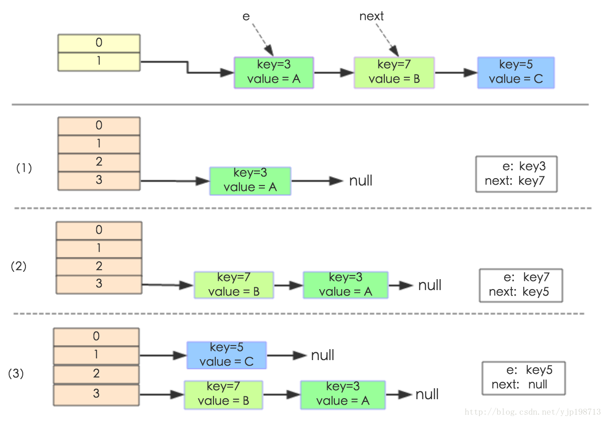
1091final Node<K,V>[] resize() {2 Node<K,V>[] oldTab = table;3 4 // 老数组长度5 int oldCap = (oldTab == null) ? 0 : oldTab.length;6 // 老最大装载数量7 int oldThr = threshold;8 9 // 初始化 新数组长度和最大装载数量10 int newCap, newThr = 0;11 12 // 老的数组长度>013 if (oldCap > 0) {14 // 老数组长度超过最大值 就不再扩充了，随你碰撞去吧15 if (oldCap >= MAXIMUM_CAPACITY) {16 threshold = Integer.MAX_VALUE;17 return oldTab;18 }19 20 // 没超过最大值，就扩充为原来的2倍 oldCap << 1 扩大2倍21 else if ((newCap = oldCap << 1) < MAXIMUM_CAPACITY 22 // 老数组长度大于默认的数组长度的话 23 && oldCap >= DEFAULT_INITIAL_CAPACITY)24 // 新最大装载数量扩充为原来的2倍25 newThr = oldThr << 1; // double threshold26 }27 28 // 老最大装载数量>0 老的数组长度<=029 else if (oldThr > 0) // initial capacity was placed in threshold30 // 老的最大装载数量给到新的最大装载数量31 newCap = oldThr;32 33 // 老最大装载数量<=0 && 老的数组长度<=034 else { 35 // 新数组长度 1636 newCap = DEFAULT_INITIAL_CAPACITY;37 // 新最大装载数量38 newThr = (int)(DEFAULT_LOAD_FACTOR * DEFAULT_INITIAL_CAPACITY);39 }40 41 // --------上边主要是根据老的数组和最大装载数量来 获取 新的数组长度和最大装载数量--------42 43 // 计算新的resize上限44 if (newThr == 0) {45 // 新的最大装载数量 = 数组长度 * 负载因子46 float ft = (float)newCap * loadFactor;47 // 新数组长度小于最大长度 并且 新的最大装载数量小于最大装载数量的话48 newThr = (newCap < MAXIMUM_CAPACITY && ft < (float)MAXIMUM_CAPACITY ?49 // 就取计算的结果 否则超过了限制就取最大的数量50 (int)ft : Integer.MAX_VALUE);51 }52 53 threshold = newThr;54 55 // new一个新的node56 Node<K,V>[] newTab = (Node<K,V>[])new Node[newCap];57 // 并覆盖老的数组58 table = newTab;59 60 // 老数组不是null61 if (oldTab != null) {62 // 把每个bucket都移动到新的buckets中63 for (int j = 0; j < oldCap; ++j) {64 Node<K,V> e;65 if ((e = oldTab[j]) != null) {66 oldTab[j] = null;67 if (e.next == null)68 newTab[e.hash & (newCap - 1)] = e;69 else if (e instanceof TreeNode)70 ((TreeNode<K,V>)e).split(this, newTab, j, oldCap);71 else { // 链表优化重hash的代码块72 Node<K,V> loHead = null, loTail = null;73 Node<K,V> hiHead = null, hiTail = null;74 Node<K,V> next;75 do {76 next = e.next;77 // 原索引78 if ((e.hash & oldCap) == 0) {79 if (loTail == null)80 loHead = e;81 else82 loTail.next = e;83 loTail = e;84 }85 // 原索引+oldCap86 else {87 if (hiTail == null)88 hiHead = e;89 else90 hiTail.next = e;91 hiTail = e;92 }93 } while ((e = next) != null);94 // 原索引放到bucket里95 if (loTail != null) {96 loTail.next = null;97 newTab[j] = loHead;98 }99 // 原索引+oldCap放到bucket里100 if (hiTail != null) {101 hiTail.next = null;102 newTab[j + oldCap] = hiHead;103 }104 }105 }106 }107 }108 return newTab;109}1.8的扩容优化
我们在来看一下这张图，经过观测可以发现，我们使用的是2次幂的扩展(指长度扩为原来2倍)，所以，元素的位置要么是在原位置，要么是在原位置再移动2次幂的位置。看下图可以明白这句话的意思，n为table的长度，
图（a）表示扩容前的key1和key2两种key确定索引位置的示例
图（b）表示扩容后key1和key2两种key确定索引位置的示例，其中hash1是key1对应的哈希与高位运算结果。
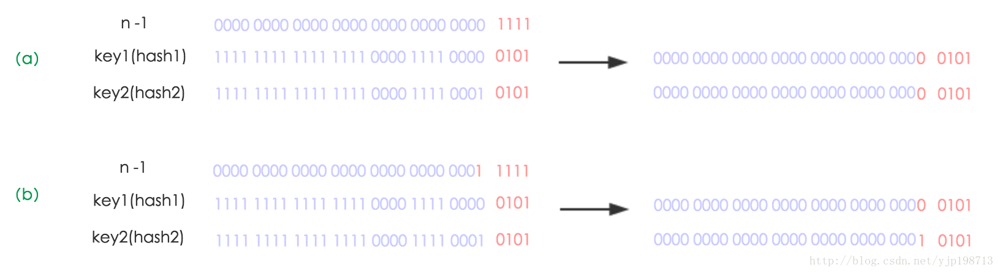
元素在重新计算hash之后，因为n变为2倍，那么n-1的mask范围在高位多1bit(红色)，因此新的index就会发生这样的变化：
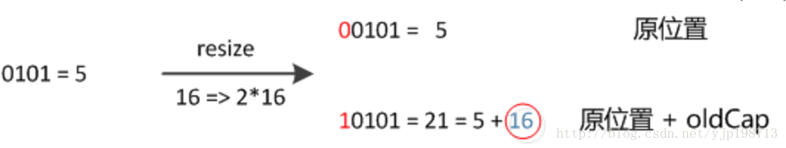
因此，我们在扩充HashMap的时候，不需要像JDK7的实现那样重新计算key在数组中的位置，只需要看key的hash值与新数组长度新增的那个bit是1还是0就好了，是0的话索引没变，是1的话索引变成“原索引+oldCap”，可以看看下图为16扩充为32的resize示意图：
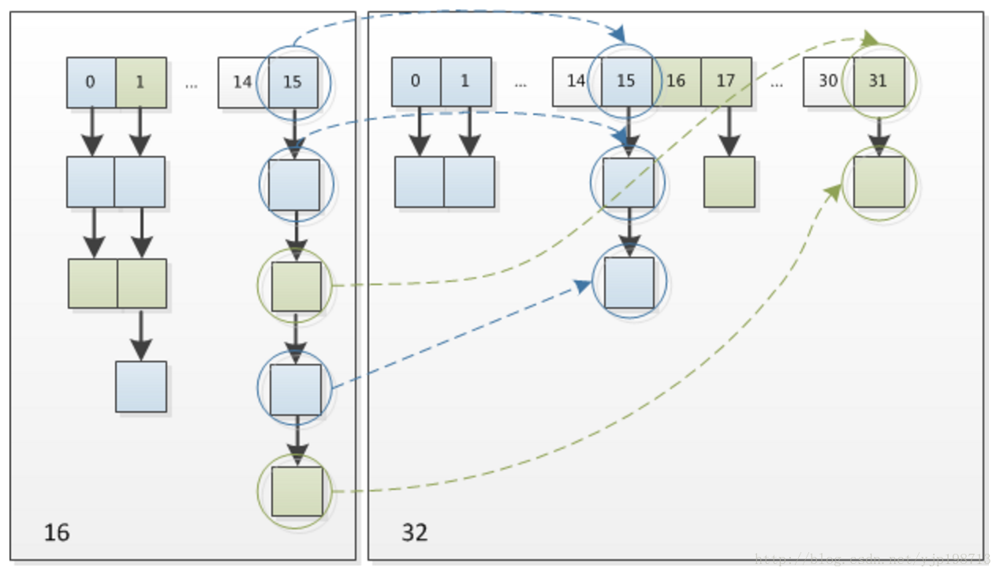
这个设计确实非常的巧妙，既省去了重新计算hash值的时间，而且同时，由于新增的1bit是0还是1可以认为是随机的，因此resize的过程，均匀的把之前的冲突的节点分散到新的bucket了。这一块就是JDK1.8新增的优化点。有一点注意区别，JDK1.7中rehash的时候，旧链表迁移新链表的时候，如果在新表的数组索引位置相同，则链表元素会倒置，但是从上图可以看出，JDK1.8不会倒置。
171/**2 * <p>测试多线程情况hashMap安全性<p>3 */4public class HashMapInfiniteLoop { 5
6 private static HashMap<String,String> map = new HashMap<String,String>(2,0.75f); 7 public static void main(String[] args) { 8 for (int i = 0; i < 20; i++) {9 new Thread("Thread1") { 10 public void run() { 11 map.put(String.valueOf(Math.random()), String.valueOf(Math.random())); 12 System.out.println(map); 13 }; 14 }.start(); 15 }16 } 17}其中，map初始化为一个长度为2的数组，loadFactor=0.75，threshold=2*0.75=1，也就是说当put第二个key的时候，map就需要进行resize。在resize的过程中出现了循环引用问题。
扩容是一个特别耗性能的操作，所以当使用HashMap的时候，估算map的大小，初始化的时候给一个大致的数值，避免map进行频繁的扩容。
负载因子是可以修改的，也可以大于1，但是建议不要轻易修改，除非情况非常特殊。
HashMap是线程不安全的，不要在并发的环境中同时操作HashMap，建议使用ConcurrentHashMap。
JDK1.8引入红黑树大程度优化了HashMap的性能。